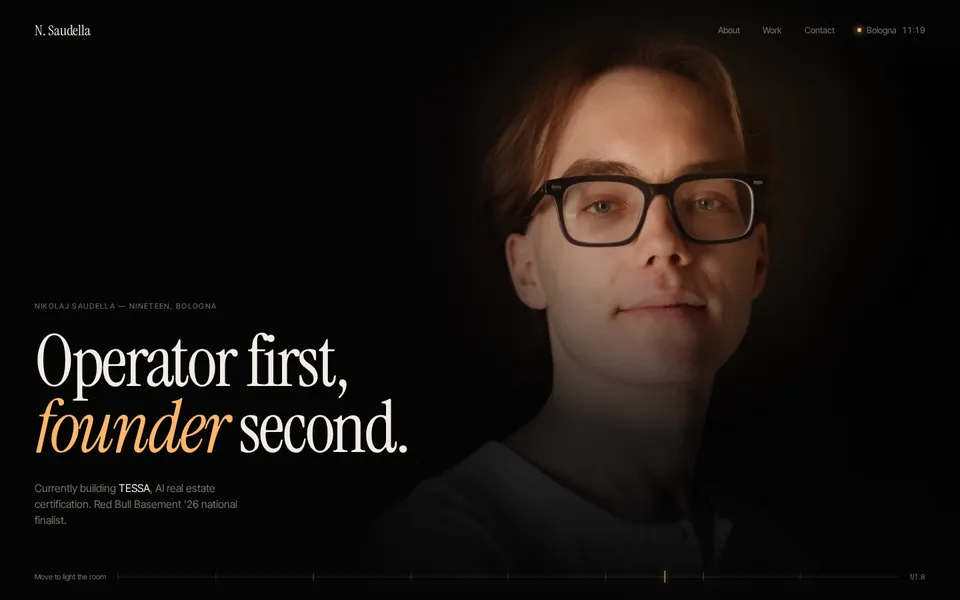
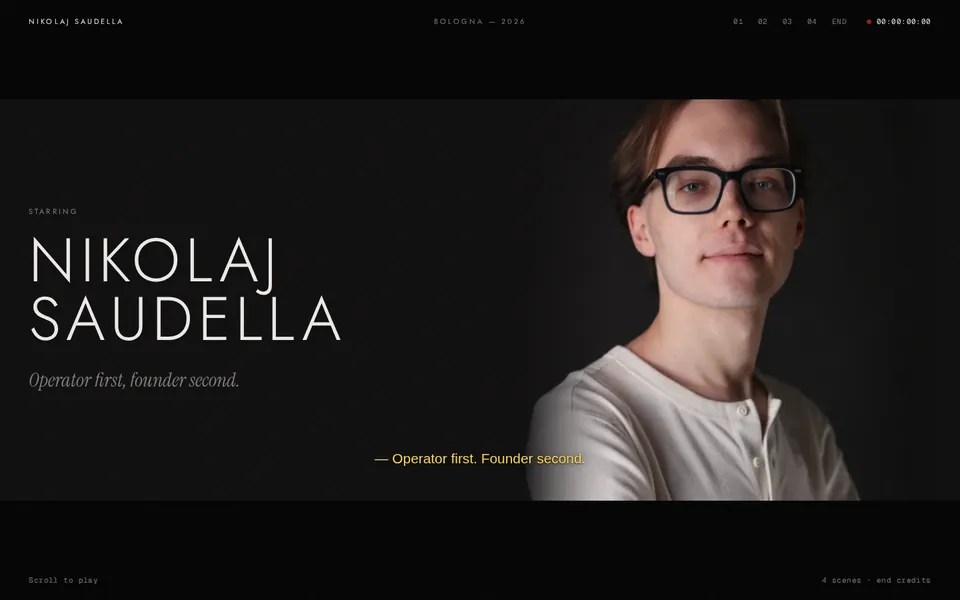
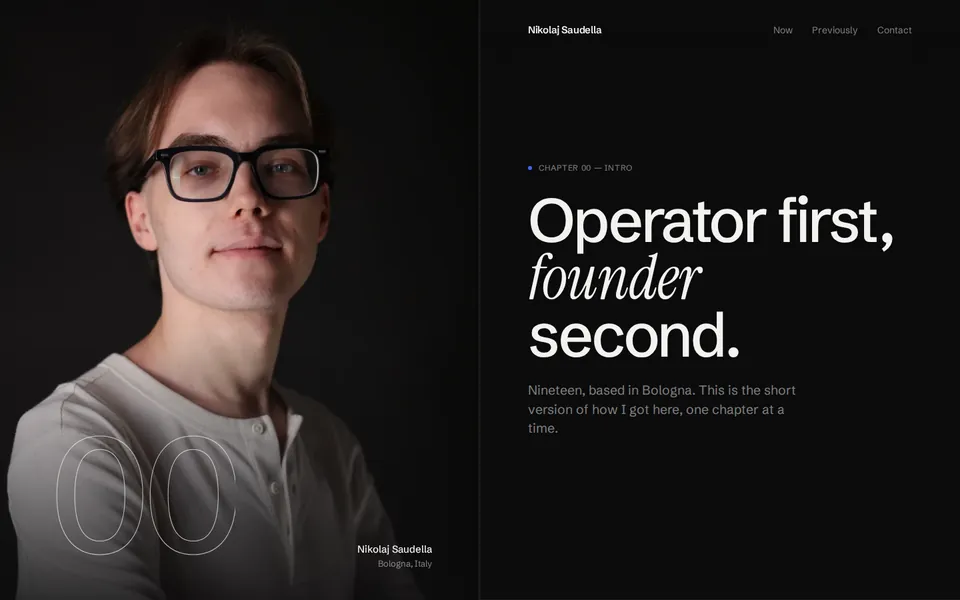
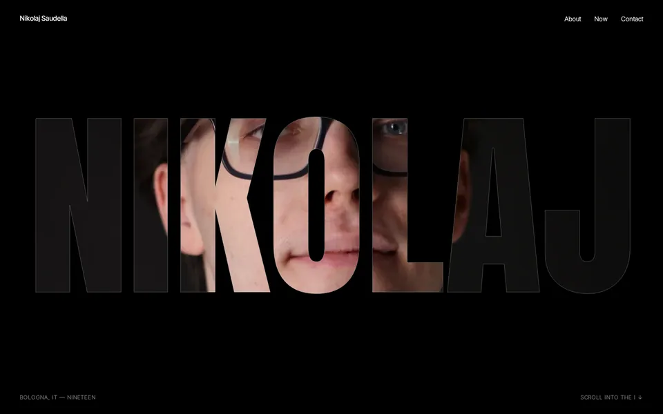
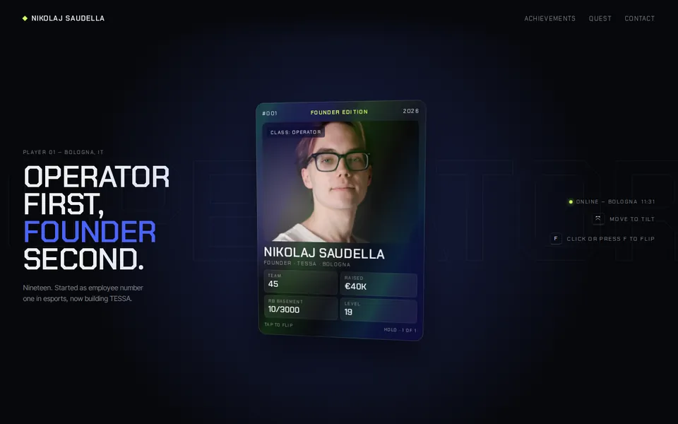
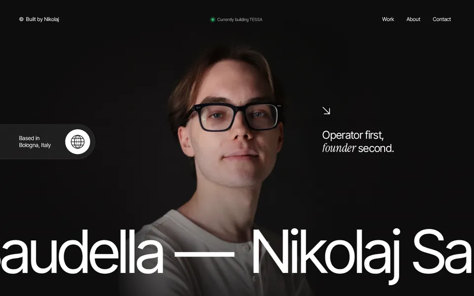
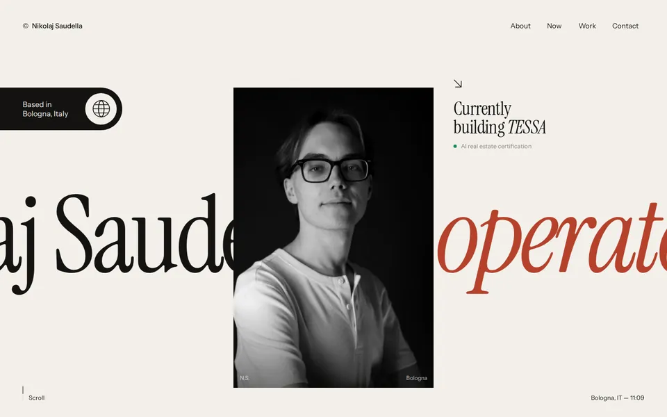
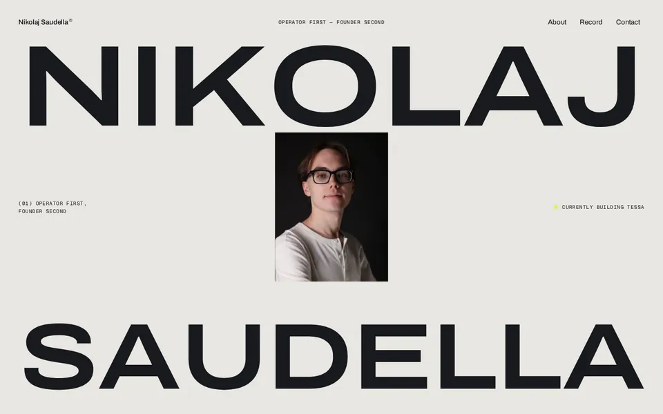

Round 2 — five explorations that start from Studio

The page is a dark studio and the pointer is the key light: the portrait is only visible where the light falls, the about text lights up as you read it, work rows glow from behind.

The site as a short film: a 3-2-1 leader, a letterboxed opening shot with live subtitles, four scenes with screenplay sluglines and close-up inserts, end credits as the contact section.

A sticky portrait on one half re-frames itself for every chapter (close-up, black & white, blue duotone) while the story scrolls on the other half, with an odometer chapter counter.

The portrait lives inside the letters: scroll and you fly through the I of NIKOLAJ into the full photo; the numbers are windows onto the same face.

A nod to the esports years: a holographic player card that tilts and flips, achievements instead of a CV, TESSA as the main quest and a party invite to get in touch.
Round 1 — first three directions

The closest to the reference: full-height portrait on a matching dark stage, giant name marquee that follows scroll direction, magnetic round buttons, work list with a floating preview, curved footer.

Your serif voice on the same structure: black & white portrait with a colour spotlight on hover, serif marquee passing behind it, the interactive sentence, count-up stats and a TESSA “now” card.

The boldest one: a fitted giant name that parts while the portrait grows to full screen, a horizontal track record, a “previously” double marquee and a lime call to action.